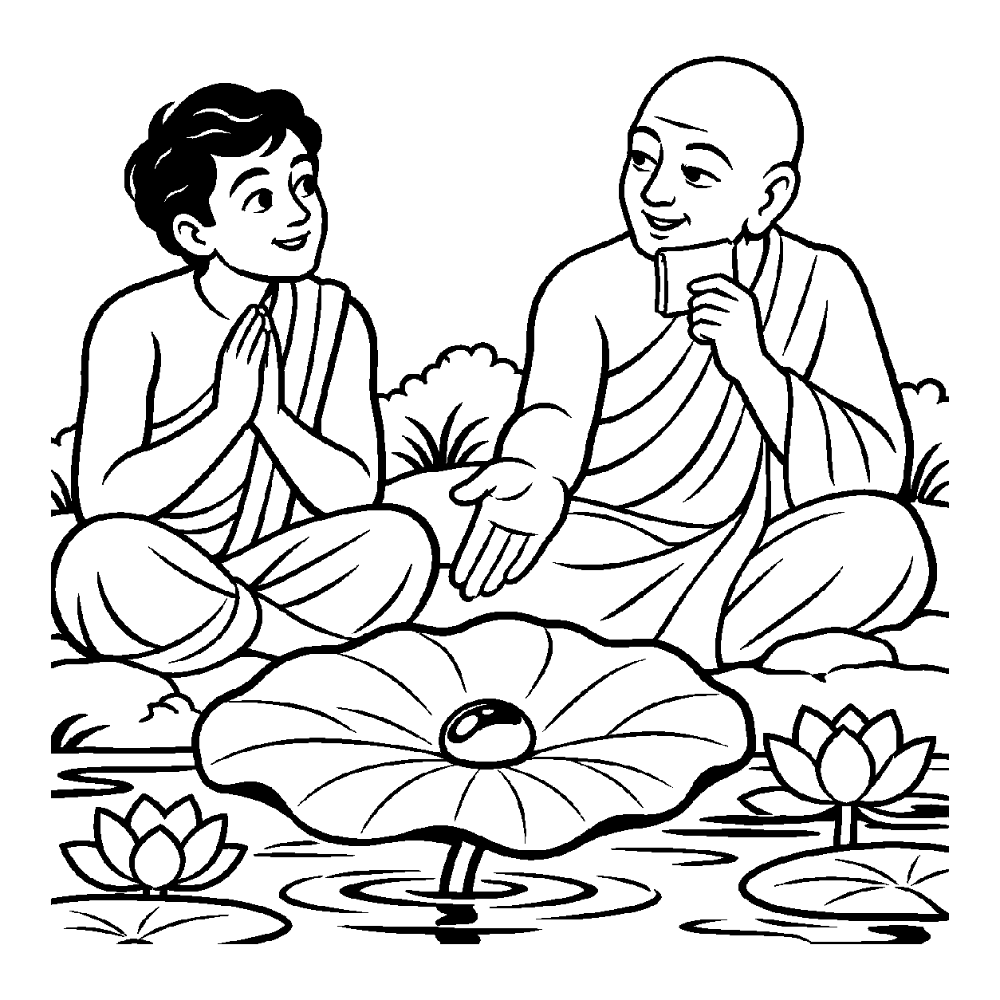

ઝવેરીના ટેબલ પર મૂકેલા સોનાના શુદ્ધ કંકણ સામે જોઈને ગ્રાહક પૂછે છે: "શું આ કંકણ લોખંડનું કે પિત્તળનું છે?" ઝવેરી કહે છે: "ના, આ કંકણ પરધાતુરૂપે સર્વથા નથી (નાસ્તિ)!" પછી ગ્રાહક પૂછે છે: "તો પછી આ કંકણની તમામ ભિન્ન-અભિન્ન પર્યાયો અને પરધાતુઓથી રહિત દશાને એક જ સેકન્ડમાં એક જ શબ્દમાં બોલી બતાવો!" ત્યારે ઝવેરી હસીને કહે છે: "એકસાથે બંને ભાવોને એક શબ્દમાં કહેવું અસંભવ છે, તે અવક્તવ્ય છે!" અહીં પહેલાં પરરૂપે 'નાસ્તિ' ધર્મનું પ્રતિપાદન થાય છે અને પછી યુગપત્ અપેક્ષાએ 'અવક્તવ્ય' સ્વીકારાય છે. તેવી જ રીતે જ્યારે ચેતન આત્માને જડ પુદ્ગલાદિ પરચતુષ્ટયથી સર્વથા રહિત (નાસ્તિરૂપ) જાણીને અને સાથે જ એક જ સમયે સ્વ-પર ચતુષ્ટયથી અકથ્ય હોવાને લીધે અવક્તવ્ય જાણીને — "સ્યાત્ આત્મા પરરૂપે નાસ્તિ છે અને અવક્તવ્ય છે" — એમ ષષ્ઠ ભંગને મુખ્યતાથી ગ્રહણ કરતો જે નય છે, તેને 'નાસ્તિત્વ-અવક્તવ્યનય' કહેવાય છે.
સપ્તભંગીનો આ છઠ્ઠો ભંગ દ્વિતીય ભંગ (સ્યાદ્ નાસ્તિ) અને ચતુર્થ ભંગ (સ્યાદ્ અવક્તવ્ય) ના સુમેળથી રચાય છે. આત્મા પરદ્રવ્યોથી સર્વથા મુક્ત છે તે વાત સ્પષ્ટ શબ્દોમાં કહી શકાય છે ('સ્યાદ્ નાસ્તિ'). પરંતુ જ્યારે આ નાસ્તિત્વની સાથે જ તેના સ્વચતુષ્ટયના અસ્તિત્વને પણ એક જ ક્ષણે એકસાથે વાણીમાં ઉતારવા જઈએ, ત્યારે ભાષા થંભી જાય છે અને તે અવક્તવ્ય બની જાય છે. આ નય સાધકને પરભાવોના ત્યાગની દ્રઢતા આપે છે અને સાથે અહંકારમુક્ત મૌન તરફ દોરી જાય છે.
આ નય સાધકને સમજાવે છે કે પરદ્રવ્યોનો નિષેધ કરવાથી આત્મા શૂન્ય નથી બની જતો; તે તો વાણીથી અગોચર એવી પરમ પૂર્ણતામાં વિશ્રામ પામે છે.
પરચતુષ્ટયથી નાસ્તિ રૂપ, યુગપત્ કથને મૌન;
નાસ્તિત્વ અવક્તવ્ય લહે, જ્ઞાની નિર્મળ કૌન.
જડથી ભિન્ન સનાતન જ્યોતિ, વાણીથી પર સાર;
ષષ્ઠ ભંગ સમઝી લહે, ભવસાગરનો પાર.
સાધકને સમજાવે છે કે પરદ્રવ્યોનો નિષેધ કરવાથી આત્મા શૂન્ય નથી બની જતો; તે તો વાણીથી અગોચર એવી પરમ પૂર્ણતામાં વિશ્રામ પામે છે.

ધર્મપુરી નગરમાં સુહાસ નામના એક યુવાન સાધકના મનમાં એક ગહન પ્રશ્ન ઘોળાતો હતો: "શાસ્ત્રો કહે છે કે આત્મા કર્મરૂપ નથી, શરીરરૂપ નથી, રાગરૂપ નથી. જો આત્મા પરરૂપે કાંઈ જ નથી અને તેને એકસાથે કહી પણ શકાતો નથી, તો પછી સાધના કોની કરવી? શું આત્મા કેવળ નકારાત્મક શૂન્યતા છે? જો આત્મા પરરૂપે નથી તો પછી તે કેવો છે?" તે પરના નિષેધ અને અકથ્યતા વચ્ચે અટવાઈને શૂન્યતાના ભયમાં પડી ગયો.
તે સમયે નગરમાં એક મહાતપસ્વી જ્ઞાની આચાર્યશ્રી આવ્યા. તેઓ સુહાસને સરોવરના કાંઠે લઈ ગયા જ્યાં કમળનાં મોટાં પાંદડાં પાણી પર તરતાં હતાં. આચાર્યશ્રીએ પૂછ્યું: "સુહાસ! આ કમળપત્ર પાણીમાં છે છતાં શું તે પાણીરૂપ છે?" સુહાસે કહ્યું: "ના મહારાજ, તે જળરૂપે સર્વથા નથી (નાસ્તિ)!" આચાર્યશ્રીએ કહ્યું: "અને હવે મને કહે કે આ કમળપત્રની લીલાશ, તેની મુલાયમતા અને જળથી અલિપ્ત રહેવાની ક્ષમતા આ ત્રણેય વાતો એક જ સેકન્ડમાં એક શબ્દમાં બોલી બતાવ!" સુહાસે કહ્યું: "એક શબ્દમાં આ ત્રણેય વાતો એકસાથે બોલવી તો અશક્ય છે, તે અવક્તવ્ય છે!" આચાર્યશ્રીએ સ્નેહથી કહ્યું: "વત્સ! નાસ્તિત્વ-અવક્તવ્યનયને ઓળખ! કમળપત્ર પાણીરૂપે નથી અને છતાં તેની અસંગતા વાણીથી પર છે, તેમ તારો આત્મા પણ પુદ્ગલ કે કર્મરૂપે સર્વથા નથી (નાસ્તિ) અને તેની અસંગતા યુગપત્ કહી ન શકાતી હોવાથી અવક્તવ્ય છે! પણ તે કમળપત્રની જેમ પૂર્ણપણે વિદ્યમાન છે, શૂન્ય નથી!" સુહાસનો શૂન્યતાનો ભય ક્ષણવારમાં ઓગળી ગયો. પરના નિષેધ સાથે અકથ્યતાનું સાચું રહસ્ય સમજાતાં જ તેનું ચિત્ત પરમ વિશ્રામમાં શાંત થઈ ગયું.
જો જીવ કેવળ નાસ્તિત્વ અને અવક્તવ્યતાને પકડીને આત્માના સદ્ભાવને ભૂલી જાય, તો તે સર્વથા ઉચ્છેદવાદી કે અજ્ઞાનવાદી બની જાય છે. આવી એકાંગી જીદથી સાધક મૂળ આત્મસત્તાને વિસરી જઈ સંકુચિતતામાં સબડે છે.
આ નય પરના નિષેધ અને વાણીની મર્યાદા બંનેનો સમન્વય કરી સાધકને પરમ અસંગભાવમાં સ્થિર કરે છે, જેથી જીવ પોતાના આત્મસ્વરૂપમાં સ્થિર થાય છે. તે સમગ્રતાનો સમન્વય દર્શાવી સાધકને પરમ વિશ્રામમાં સ્થિર કરે છે.